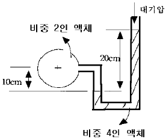
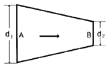
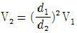
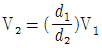
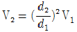
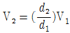
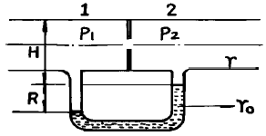
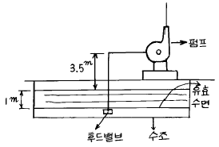
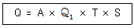

소방설비기사(기계분야) (2003-03-16 기출문제)
1과목: 소방원론
1. 열복사에 관한 스테판-볼츠만의 법칙을 바르게 설명한 것은?
- 열복사량은 복사체의 절대온도에 정비례한다.
- 열복사량은 복사체의 절대온도의 제곱에 비례한다.
- 열복사량은 복사체의 절대온도의 3승에 비례한다.
- 열복사량은 복사체의 절대온도의 4승에 비례한다.
(정답률: 63%)

2. 표준화재시간 온도곡선의 제정 목적은?
- 건물화재의 연소속도를 측정하기 위하여 표준화 한 것이다.
- 후레시오버 시간을 측정하기 위하여 표준화 한 것이다.
- 건물의 화재 계속시간 측정용으로 표준화 한 것이다.
- 건물 방화재료의 가열시험용으로 표준화 한 것이다.
(정답률: 24%)
3. 중질유의 탱크에서 장시간 조용히 연소하다가 탱크내의 잔존기름이 갑자기 분출하는 현상은?
- 보일오버(Boil over)
- 플래시오버(Flash over)
- 스롭오버(Slop over)
- 후로스오버(Froth over)
(정답률: 58%)
4. 불연재료가 아닌 것은?
- 기와
- 석고보드
- 유리
- 콘크리트
(정답률: 44%)
5. 철근콘크리트에서 철근의 허용응력을 위태롭게 하는 최저 온도는 약 몇 ℃ 정도인가?
- 400
- 600
- 800
- 900
(정답률: 37%)
6. 가연성 액체의 농도를 저하시키는 방법을 이용하여 소화를 하였을 경우, 이는 어느 소화원리를 이용한 것인가?
- 가연물 제거
- 산소 제거
- 열원 제거
- 연쇄반응 차단
(정답률: 56%)
7. 화재시 연기를 이동시키는 추진력으로 옳지 않은 것은?
- 굴뚝효과
- 팽창
- 중력
- 부력
(정답률: 52%)
8. 이산화탄소 소화설비의 단점이 아닌 것은?
- 인체의 질식이 우려된다.
- 소화약제의 방출시 인체에 닿으면 동상이 우려된다.
- 소화약제의 방사시 소리가 요란하다.
- 전기의 부도체로서 전기 절연성이 높다.
(정답률: 62%)
9. 다음중 자연발화의 형태가 다른 것은?
- 퇴비
- 석탄
- 고무분말
- 건성유
(정답률: 48%)
10. 목조건물이 밀집되어 있는 가구(街區) 화재시 연소(燃燒)가능 면적이 가장 많은 것은?
- 도로면(道露面) 화재
- 도로각(道露角) 화재
- 가구내(街區內) 화재
- 가구변(街區邊) 화재
(정답률: 46%)
11. 고체가 액체로 되었다가 기체로 되어 불꽃을 내면서 연소하는 현상은?
- 표면연소
- 분해연소
- 자기연소
- 증발연소
(정답률: 67%)
12. 경유화재가 발생할 때 주수소화가 부적당한 이유는?
- 경유는 물보다 비중이 가벼워 물위에 떠서 화재 확대의 우려가 있으므로
- 경유는 물과 반응하여 유독가스를 발생하므로
- 경유의 연소열로 인하여 산소가 방출되어 연소를 돕기 때문에
- 경유가 연소할 때 수소가스를 발생하여 연소를 돕기 때문에
(정답률: 63%)
13. 건물 내부의 내장재를 불연재료 등으로 하지 않아도 되는 건물은?
- 숙박시설
- 집회시설
- 의료시설
- 창고시설
(정답률: 42%)
14. 위험물 제4류 제2석유류(경유, 등유)에 대한 특성을 옳게 설명한 것은?
- 성질은 인화성액체이다.
- 상온에서 안정하나 약간의 자극으로 폭발하기 쉽다.
- 물에용해하지 않고 물보다 무거우므로 수조에 저장하여야 한다.
- 소화방법은 포소화약제에 의한 것보다 주수소화가 효과적이다.
(정답률: 61%)
15. 용기에 담겨진 어떤 액체위험물이 연소할 때의 현상을 설명한 것이다. 옳은 것은?
- 표면이 작은 용기에서의 단위시간당 연소깊이는 크다.
- 표면이 큰 용기에서의 단위시간당 연소깊이는 크다.
- 단위시간당 연소깊이는 용기표면의 면적과는 관계없이 일정하다.
- 액체 위험물의 깊이가 깊을수록 연소깊이가 크다.
(정답률: 40%)
16. 지하화재의 특성에 대한 설명으로 옳지 않은 것은?
- 발화점을 찾기가 쉽지 않으며, 내부상황을 파악하기 어렵다.
- 규모에 따라서 차이는 있겠지만 고층건축물에 비하여 진압활동에 더 많은 장애가 있다.
- 폐점중에 화재가 발생한 경우에는 계단, 엘리베이터 등이 개방되어 농연과 열기의 분출이 적어 소방대의 진입이 용이하다.
- 개방된 개구부는 연소경로가 되지 않도록 주의한다.
(정답률: 71%)
17. 폭발에 관한 설명으로 옳지 않은 것은?
- 반응이 일어나는 화염면이 정지매질에 대하여 음속보다 빠른 속도로 이동하는 것을 폭굉이라고 한다.
- 반응이 일어나는 화염면이 정지매질에 대해서 음속보다 느린 경우를 폭연이라고 한다.
- 물질의 상태중 공기, 증기 등과 같이 기체상태의 폭발을 의상폭발이라고 한다.
- 화염면의 이동을 파로 생각하여 폭굉파라고 하며, 그 파면에는 충격파가 수반한다.
(정답률: 51%)
18. 포소화설비의 가압송수 장치를 전동기 또는 내연기관에 의한 펌프를 설치한 경우 펌프의 양정공식 H = h1 + h2 + h3 + h4 와 관계없는 것은?
- 방출구의 설계 압력 환산수두 또는 노즐선단의 방사 압력의 환산수두
- 배관의 마찰손실수두
- 소방용 호스의 마찰손실수두
- 펌프의 종류
(정답률: 50%)
19. 버너의 화염에서 혼합기의 유출속도가 연소속도를 초과하면 불꽃이 노즐에 정착되지 않고 꺼져 버리는 현상은?
- Boil-over현상
- Flash-over현상
- Blow-off현상
- 역화현상
(정답률: 66%)
20. 갑작스런 화재 발생시 인간의 피난 특성으로 틀린 것은?
- 무의식중에 평상시 사용하는 출입구를 사용한다.
- 최초로 행동을 개시한 사람을 따라서 움직인다.
- 공포감으로 인해서 빛을 피하여 어두운 곳으로 몸을 숨긴다.
- 무의식중에 발화 장소의 반대 쪽으로 이동한다.
(정답률: 73%)
2과목: 소방유체역학
21. 소화약제의 유지관리에 대한 설명 중 틀린 것은?
- 이산화탄소의 약제량 측정은 가스레벨메타(액면계)로 한다.
- 기계포 소화약제는 침전물의 생성을 방지하기 위해 질소를 봉입하여 저장한다.
- 포 원액 저장탱크는 직사광선이 쬐는 곳을 피해 설치하는 것이 바람직하다.
- 주성분이 중탄산나트륨인 소화약제의 성분비는 중탄산나트륨이 75 wt% 이상이어야 한다.
(정답률: 35%)
22. 거리가 1000m 되는 곳에 안지름 20cm의 직원관을 통하여 물을 수평으로 수송하려 한다. 한 시간에 800m3을 보내려면 몇 kPa의 압력이 필요한가? (단, 마찰 계수 f = 0.03이다.)
- 9253
- 1373
- 2013
- 3753
(정답률: 37%)
23. 수면의 면적이 10m2 인 저수조에 계속적으로 1 m3/min의 유량으로 물을 채우고 있다. 화재 초기에 수심은 2m 였고 진화를 위해 2 m3/min 의 물을 계속 취수한다면, 이 저수조가 고갈 될 때 까지는 약 몇 분 걸리겠는가?
- 15
- 20
- 25
- 30
(정답률: 29%)
24. 관내 물의 속도가 12 m/s, 압력이 103 kPa이다. 속도수두와 압력수두는 각각 몇 m 인가?
- 7.35, 9.52
- 7.5, 10
- 7.35, 10.5
- 7.5, 10.5
(정답률: 37%)
25. 진공압력이 40mmHg일 경우 절대압력은 몇 kPa 인가? (단, 대기압은 101.3 kPa이다.)
- 5.33
- 106.6
- 96
- 196
(정답률: 36%)
26. 수용성 유류화재에 대한 적응 소화약제에 대한 설명 중 옳은 것은?
- 수용성 유류화재에는 수성막포 소화약제를 사용할 수 있다.
- 수용성 유류화재에는 내알콜포형 소화약제를 사용해야 소화를 할 수 있다.
- 수용성 유류화재에는 보통형의 공기포 원액을 사용하면 발포된 거품이 파괴되지 않기 때문에 사용할 수 있다.
- 수용성 유류라 함은 알콜류, 에텔류, 케톤류을 말하며 석유류 화재에 적응성이 있는 소화약제를 사용하여 소화 할 수 있다.
(정답률: 22%)
27. 다음 이상기체의 상태변화 중 비가역변화의 원인이 되는 것은?
- 등적변화
- 등온변화
- 기체의 혼합
- 폴리트로프변화
(정답률: 46%)
28. 그림과 같은 액주계에서 원 중심의 압력은 몇 kPa 인가? (단, 대기압은 101 kPa 이 작용한다.)

- 97.08
- 106.88
- 95.12
- 100
(정답률: 32%)
29. 다음 비열에 대한 설명 중 틀린 것은?
- 정적비열은 체적이 일정하게 유지되는 동안 온도에 대한 내부에너지 변화율이다.
- 정압비열을 정적비열로 나눈 것이 비열비이다.
- 비열비는 일반적으로 1보다 크나 1보다 작은 물질도 있다.
- 정압비열은 압력이 일정하게 유지될 때 온도에 대한 엔탈피 변화율이다.
(정답률: 43%)
30. 다음 중 국소 유속을 측정할 수 있는 장치는?
- 오리피스(orifice)
- 벤츄리(venturi) 미터
- 피토(pitot) 관
- 위어(weir)
(정답률: 26%)
31. 그림과 같은 관에 비압축성 유체가 흐를 때 A 단면의 평균속도가 V1 일 때 B 단면에서의 평균속도 V2는?





(정답률: 30%)
32. 원심 팬이 1700 rpm으로 회전할 때의 전압은 155 mmAq, 풍량은 240m3/min이다. 이 팬의 비교 회전도는? (단, 공기의 밀도는 1.2 kg/m3이다.)
- 502
- 652
- 687
- 827
(정답률: 18%)
33. 그림과 같은 오리피스 전·후의 압력차는 몇 kPa 인가? (단, 액주계 액체의 비중은 2.5, 흐르는 유체의 비중은 0.85, 마노미터의 읽음은 400㎜이다.)

- 9.8
- 63.21
- 6.468
- 98.0
(정답률: 25%)
34. 이상기체를 온도변화 없이 압축시키는 경우 열의 출입 및 내부에너지의 변화를 옳게 표현한 것은?
- 열방출, 내부에너지 감소
- 열방출, 내부에너지 불변
- 열흡수, 내부에너지 증가
- 열흡수, 내부에너지 불변
(정답률: 22%)
35. 어느 유체가 배관내에 층류로 흐르고 있다. 지름은 100mm이며, 동점성계수가 1.3x10-3 cm2/s인 유체로서 층류로 흐를 수 있는 최대유량은 약 얼마인가? (단, 임계 레이놀즈수는 2100 이다.)
- 21.44 cm3/s
- 214.4 cm3/s
- 21.44 m3/s
- 2.144 m3/s
(정답률: 26%)
36. 압력에 대한 설명으로 맞는 것은?
- 절대압력은 대기압에 계기압력을 감한 것이다.
- 절대압력은 대기압에 계기압력을 더한 것이다.
- 대기압을 기준해서 나타나는 압력은 절대압력이다.
- 완전진공을 기준으로 해서 나타나는 압력은 계기압력이다.
(정답률: 28%)
37. 펌프의 흡입양정이 4m이고 흡입관로의 손실수두가 2m 일때 NPSH는 약 몇 m 인가? (단, 수면은 표준대기압(101.3 kPa) 상태이고, 이 때의 포화 수증기압은 3300 Pa 이다.)
- 10
- 2
- 6
- 4
(정답률: 35%)
38. 소화약제 중 오존파괴지수가 가장 큰 것은?
- 할론 1011
- 할론 1301
- 할론 1211
- 할론 2402
(정답률: 42%)
39. 할로겐화합물 소화약제 중 할론 1211의 화학식은?
- CH2BrCl
- CF2ClBr
- CBr2F2
- CBrF3
(정답률: 45%)
40. 배관내를 흐르는 유체의 마찰손실에 대한 설명 중 옳은 것은? (단, 관마찰계수는 일정하다고 가정한다.)
- 유속과 관길이에 비례하고 지름에 반비례한다.
- 유속의 2승과 관길이에 비례하고 지름에 반비례한다.
- 유속의 평방근과 관길이에 비례하고 지름에 반비례한다.
- 유속의 2승과 관길이에 비례하고 지름의 평방근에 반비례한다.
(정답률: 34%)
3과목: 소방관계법규
41. 소방법의 목적에 포함되지 않는 것은?
- 위험물의 화재를 예방, 진압하는 것
- 건축물의 화재로부터 국민의 생명과 재산을 보호하는 것
- 공공의 안녕질서의 유지와 사회의 복리증진에 기여하는 것
- 건축물의 안전한 사용으로 쾌적하고 안락한 국민생활을 보장하는 것
(정답률: 47%)
42. 아파트로서 층수가 11층이상인 것은 몇 층이상의 층에 자동식소화기를 설치하여야 하는가?
- 5
- 6
- 7
- 8
(정답률: 35%)
43. 소방대상물의 검사는 누가 하는가?
- 한국소방검정공사
- 소방본부장 또는 소방서장
- 소방대상물의 관계인
- 한국소방안전협회
(정답률: 44%)
44. 다음중 소방법상 한국소방안전협회의 임무가 아닌 것은?
- 화재예방과 안전관리의식의 고취를 위한 대국민 홍보
- 소방관계 종사자의 품위 보존
- 소방검사 실시
- 소방기술과 안전관리에 관한 간행물 발간
(정답률: 25%)
45. 소방신호의 종류가 아닌 것은?
- 경계신호
- 해제신호
- 훈련신호
- 구급신호
(정답률: 52%)
46. 소방본부장은 화재의 예방상 위험하다고 인정되는 행위를 하는 사람에 대하여 명령을 할 수 있는데 그 명령 사항이 될 수 없는 것은?
- 불장난, 흡연 및 화기취급의 금지 또는 제한
- 타고 남은 불 또는 화기의 우려가 있는 재의 처리
- 방치되어 있는 위험물의 이동 또는 제거
- 보일러 굴뚝의 매연의 제한
(정답률: 50%)
47. 지하암반저장소의 지하공동은 암반투수계수가 몇 m/sec이하인 천연암반내에 설치 하여야 하는가?
- 10-5
- 10-6
- 10-7
- 10-8
(정답률: 8%)
48. 제1류위험물로서 산화성고체에 해당되는 것은?
- 아염소산염류
- 적린
- 알칼리토금속류
- 철분
(정답률: 42%)
49. 소화활동설비에서 제연설비를 설치하여야 할 소방대상물 중 틀린 것은?
- 관람집회 및 운동시설로서 무대부의 바닥면적이 100제곱미터 이상인 것
- 근린생활 및 위락시설· 판매시설 및 숙박시설로서 지하층 또는 무창층의 바닥면적이 1천제곱미터이상인 것
- 지하가로서 연면적 1천제곱미터 이상인 것
- 시외버스정류장·철도역사·공장시설·해운시설의 대합실 또는 휴게시설로서 지하층 또는 무창측의 바닥면적이 1천제곱미터 이상인 것
(정답률: 44%)
50. 위험물제조소의 표지의 바탕 및 문자의 색으로 옳은 것은?
- 황색바탕, 흑색문자
- 백색바탕, 흑색문자
- 흑색바탕, 백색문자
- 적색바탕, 백색문자
(정답률: 39%)
51. 연면적 몇 m2 이상인 소방대상물에는 수동식소화기 또는 간이소화용구를 설치하여야 하는가?
- 30
- 33
- 35
- 38
(정답률: 48%)
52. 탱크의 매설에서 지하탱크저장소의 탱크는 본체 윗부분이 지면(건축물에 설치하는 경우에는 그 건축물의 최저부의 바닥을 말한다)으로 부터 몇미터 이상의 깊이가 되도록 매설 하여야 하는가?
- 0.6
- 0.8
- 1.0
- 1.2
(정답률: 25%)
53. 다음중 방염물품의 성능기준은 어떤 법 기준으로 정하는가?
- 대통령령
- 국무총리령
- 행정자치부령
- 시·도 조례
(정답률: 36%)
54. 특수장소 중 위락시설에 속하는 것은?
- 경마장
- 영화관
- 무도장
- 요양소
(정답률: 34%)
55. 전문소방시설 공사업을 하고자 하는 등록기준 내용으로서 틀린것은?
- 자본금은 법인일 경우 1억원 이상
- 자본금은 개인일 경우 자산평가액 2억원이상
- 주된기술인력은 소방설비기술사 이어야 한다.
- 보조기술인력을 1인 이상
(정답률: 40%)
56. 소방용수시설은 당해 지역안의 각 소방대상물로부터 하나의 소방용수시설까지의 거리가 도시계획법에 의한 공업지역에 있어서는 몇 m 이내가 되도록 설치하여야 하는가?
- 100
- 120
- 150
- 200
(정답률: 31%)
57. 소방시설공사업자가 등록받은 내용의 변경을 신고하지 않아도 되는 것은?
- 영업소의 소재지
- 상호 또는 명칭
- 사무실 임대차계약서
- 변경된 기술능력자의 기술자격증
(정답률: 59%)
58. 화재의 조사활동에 관한 설명 중 틀린 것은?
- 방화혐의가 있을 때는 경찰서장에게 알린다.
- 화재조사는 소화활동 종료 즉시 시작하여야 한다.
- 소화로 인하여 생긴 손해도 조사의 대상이 된다.
- 화재조사요원은 관계인에게 질문할 수 있다.
(정답률: 35%)
59. 주유취급소의 고정주유설비에서 주유관의 길이로 맞는 것은?
- 3m 이내
- 5m 이내
- 7m 이내
- 10m 이내
(정답률: 36%)
60. 소화활동설비에 해당되는 것은?
- 자동화재속보설비
- 비상방송설비
- 제연설비
- 상수도소화용수설비
(정답률: 43%)
4과목: 소방기계시설의 구조 및 원리
61. 다음 중 발포기(foam chamber)의 구성요소가 아닌 것은?
- 챔버(chamber)
- 노즐(nozzle)
- 디프렉터(deflector)
- 포옴 메이커(foam maker)
(정답률: 21%)
62. 상수도 소화용수설비의 소화전을 접속하는 최소 수도배관의 호칭지름은 몇 밀리미터 이상인가?
- 65
- 75
- 80
- 100
(정답률: 47%)
63. 연결살수설비의 설치 대상이 아닌 것은?
- 판매시설 용도 건물 바닥면적의 합계가 700m2인 것
- 백화점 용도 건물의 지하층으로서 바닥면적의 합계가 700m2인 것
- 학교 용도 건물의 지하층으로서 700m2인 것
- 탱크의 용량이 40톤인 지상 노출 가스탱크 시설
(정답률: 28%)
64. 다음 중 연결살수설비헤드 설치시 천장 또는 반자의 각 부분으로부터 수평거리로 맞는 것은?
- 스프링클러헤드는 2.1m 이하
- 폐쇄형헤드는 2.7m 이하
- 개방형헤드는 3.2m 이하
- 살수전용헤드는 3.7m 이하
(정답률: 39%)
65. 일반가연물을 취급하는 창고시설에 폐쇄형 습식 스프링클러 설비를 설치할 때 가압송수장치의 분당 토출량(m3)으로 맞는 것은?
- 0.8
- 1.6
- 2.4
- 1.0
(정답률: 17%)
66. 정격토출량이 2400ℓ /분인 스프링클러용 펌프를 그림과 같이 설치하고자 한다. 흡입배관의 호칭구경을 200mm로할때, 이 펌프의 소요 NPSH는 얼마 이하가 되어야 할 것인가? (단, 설계기준온도는 21℃로 하며 이 온도에서의 수증기압은 0.1kgf/cm2, 흡입배관을 통하여 2400리터/분의 흐름이 일어날때의 총 마찰손실수두는 2.2m, 대기압은 1kgf/cm2이라고 하고, 속도수두는 무시한다.)

- 5.5m
- 5.0m
- 2.5m
- 2.3m
(정답률: 20%)
67. 연결송수관설비의 설치기준으로 맞는 것은?
- 11층 이상에 설치하는 방수구는 쌍구형으로 설치한다
- 방수구는 개폐기능이 없는 것으로 한다.
- 높이 31m 이상 소방대상물에는 가압송수장치를 설치한다.
- 방수기구함은 방수구가 가장 많은 층을 기준으로 5개층마다 설치한다.
(정답률: 24%)
68. 연소할 우려가 있는 개구부에 설치하는 드렌처 설비에 대한 내용 중 잘못된 것은?
- 드렌처 헤드는 개구부 위측에 2.5m 이내마다 1개를 설치한다.
- 제어밸브는 바닥면으로 부터 0.5m 이상 1.5m 이하의 위치에 설치한다.
- 드렌처 헤드의 방수량은 80ℓ /min 이상이어야 한다.
- 드렌처 헤드 선단의 방수압력은 1kgf/cm2 이상이어야 한다.
(정답률: 30%)
69. 이산화탄소 소화설비의 기동장치에 대한 내용 중 잘못된 것은?
- 자동식 기동장치는 자동화재 탐지설비의 감지기의 작동과 연동하여야 한다.
- 가스압력식 자동 기동장치의 기동용 가스용기 용적은 0.6ℓ 이상이어야 한다.
- 수동식 기동장치의 방출용 스위치는 음향경보 장치와 연동하여 조작될 수 있는 것이어야 한다.
- 전역 방출방식에 있어서 수동식 기동장치는 방호구역마다 설치하여야 한다.
(정답률: 37%)
70. 제연풍도의 설치에 관한 설명 중 틀린 것은?
- 배출기의 전동기 부분과 배풍기 부분은 격리하여 설치할 것
- 배출기와 제연풍도의 접속 부분에 사용하는 캔버스는 석면 등 내열성이 있는 것으로 할 것
- 제연풍도가 벽등을 관통하는 경우에는 벽 등과의 틈이 10cm 되게 할 것
- 제연풍도가 내화구조의 벽 또는 바닥을 관통하는 곳에 있어서는 방화 댐퍼를 부착 할 것
(정답률: 30%)
71. 전역 방출방식의 분말소화설비에 있어서 방호구역의 용적이 500m3 일때 적당한 분사헤드의 수는? (단, 제1종 분말이며, 체적 1m3당 소화약제의 량은 0.60kg이며, 분사헤드 1개의 분당 표준방사량은 18kg이라고 한다.)
- 34개
- 134개
- 9개
- 30개
(정답률: 40%)
72. 배기를 위한 유효한 개구부가 없는 지하층이나 무창층 또는 밀폐된 거실 및 사무실로서 그 바닥 면적이 20m2 미만인 장소에서 사용(취급)하여도 되는 소화기용 소화약제는 어느 것인가?
- 하론 1211
- 하론 1301
- 하론 2402
- 탄산가스(CO2)
(정답률: 32%)
73. 어느 소방대상물에 옥외소화전이 6개가 설치되어 있다. 옥외소화전 설비를 위해 필요한 최소 수원의 수량은?
- 10m3
- 14m3
- 21m3
- 35m3
(정답률: 42%)
74. 지하매설 소화배관에서 발생하는 부식의 종류 및 그 설명이 부적절한 것은?
- 전식 - 누설된 전류에 의한 부식
- 금속부식 - 금속의 경계, 입자간의 경계에서 선택적 발생
- 찰과부식 - 경계면에서 근소한 상대적슬립에 의해 발생
- 간극부식 - 전해질 수용액의 침투에 의한 부식
(정답률: 14%)
75. 강관의 나사이음에 사용하는 밀폐 재료로 시간이 경과하면 썩어서 누설의 원인이 되는 것은?
- 광명단
- 마사(麻絲)
- 액상 합성수지
- 시일 테이프
(정답률: 42%)
76. 포소화약제의 저장량은 고정포 방출구에서 방출하기 위하여 필요한 량 이상으로 하여야 한다. 공식에 대한 설명이 틀린 것은?

- Q1 : 포화약제의 양(ℓ)
- T : 방출시간(분)
- A : 탱크의 체적(m3)
- S : 포 소화약제의 사용농도
(정답률: 45%)
77. 사람이 상주하는 곳에 청정소화약제를 설치하려할 때 최대 허용농도가 틀리게 적용된 것은?
- HCFC BLAND A ⇒ 10%
- HFC-227ea ⇒ 7.5%
- IG-541 ⇒ 43%
- HFC-23 ⇒ 50%
(정답률: 26%)
78. 연결살수설비를 전용헤드로 건축물의 실내에 설치할 경우 헤드간의 거리는 얼마인가? (단, 헤드의 설치는 정방향 간격이다.)
- 2.3m
- 3.5m
- 3.7m
- 5.2m
(정답률: 8%)
79. 특별피난계단 및 비상용 승강기 부속실의 제연설비에 대한 시설기준을 적절하게 표현하지 않은 항목은?
- 차압은 40 - 60 파스칼로 유지되어야 한다.
- 급기는 화재 당해층의 댐퍼만 개방한다.
- 부속실에는 급기만 설치하고, 거실에서 배기한다.
- 송풍기 및 급배기 댐퍼는 화재감지기에 의해 자동 연동되어야 한다.
(정답률: 24%)
80. 다음 설명 중 가장 부적당한 것은?
- 피난공지는 피난상 유효한 통로에 의해 도로, 광장, 공원 등에 통해 있을 것
- 1인용 완강기의 강하공간 내에는 수목전선, 전주 등이 없어야 한다.
- 사강식 구조대는 그 설치개소의 하부(下部)에 다른 피난기구, 전선 등이 있어도 무방하다.
- 피난용 개구부는 피난상 유효한 크기뿐 아니라 그 형상도 상시 확보되어야 한다.
(정답률: 44%)